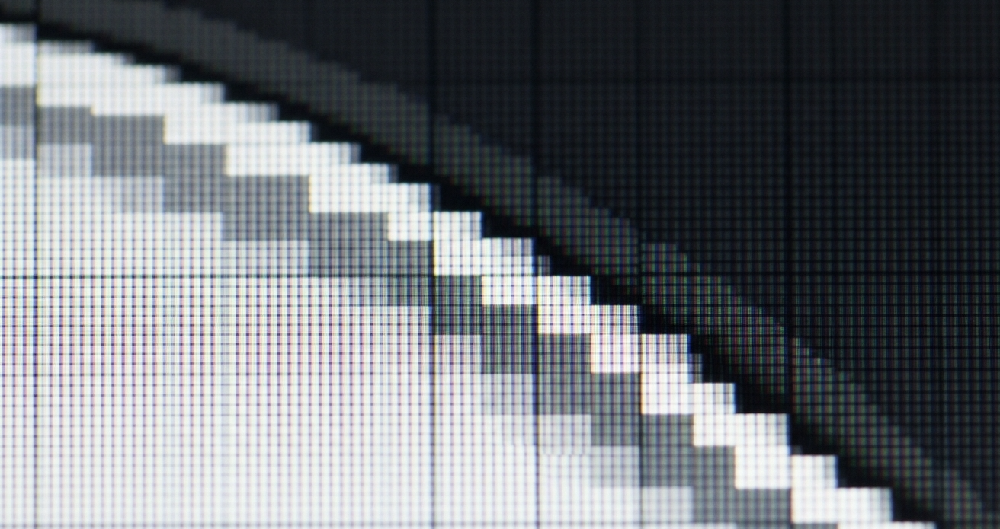

00 — Getting Started: How Computer Graphics Work
Pixels: pictures made of tiny squares
A screen is a grid of tiny dots called pixels ("picture elements"), packed close enough together that from a normal viewing distance they blend into a smooth image. Each pixel can show exactly one colour at a time. A digital image — a photo, an icon, a game, a p5 sketch — is nothing more than a big grid of pixels, each one set to some colour, updated many times a second.
Nothing in the picture is a "shape" as far as the screen is concerned — a circle is just a roughly circular patch of pixels that all happen to be the same colour. The shape only exists in the code that decided which pixels to colour in; the screen itself just displays a grid of independent dots.

Figure: a close-up crop of a curved edge, zoomed in until the individual square pixels are visible — showing that a "smooth" curve is really a staircase of coloured squares.